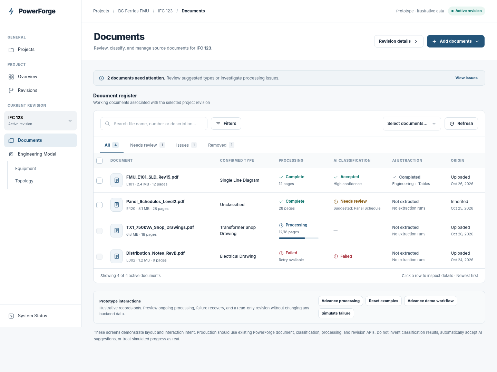
PHASE 6F · DOCUMENT REGISTER
Extraction in Documents
Existing document list with individual source readiness, AI Extraction status, multi-selection, and confirmed-classification selection.
The original seven workspace references are retained, with Phase 6F extraction added to the Documents register and Document & Evidence Viewer. All processing and results are simulated; this proposed update is for visual review before Codex implementation.
Existing Documents UI, three-step extraction flow, bulk selection and source evidence — no new sidebar workspace.

Existing document list with individual source readiness, AI Extraction status, multi-selection, and confirmed-classification selection.
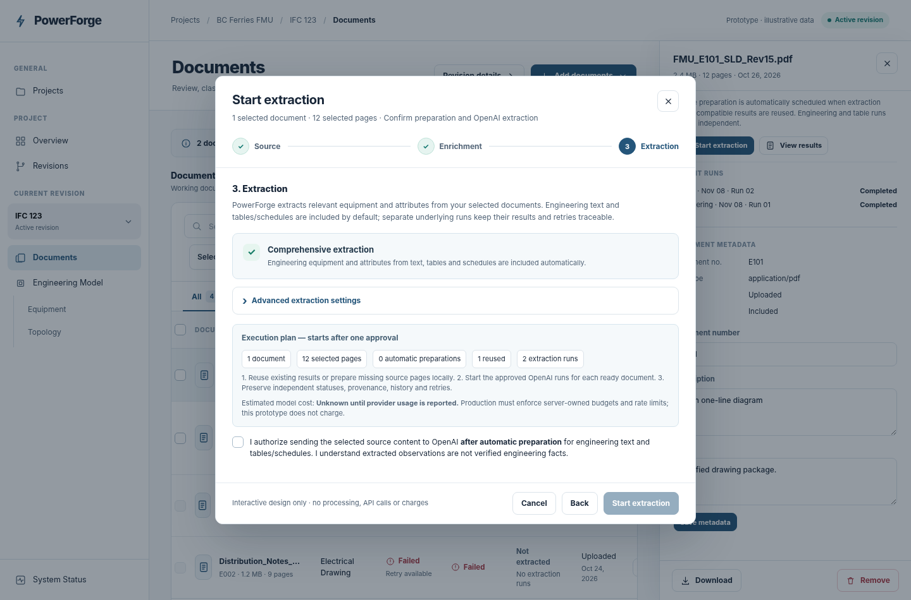
Source → Enrichment → Extraction. Automatically reuse or prepare source pages after one final confirmation, optionally override OCR, and run comprehensive extraction by default (advanced options available).
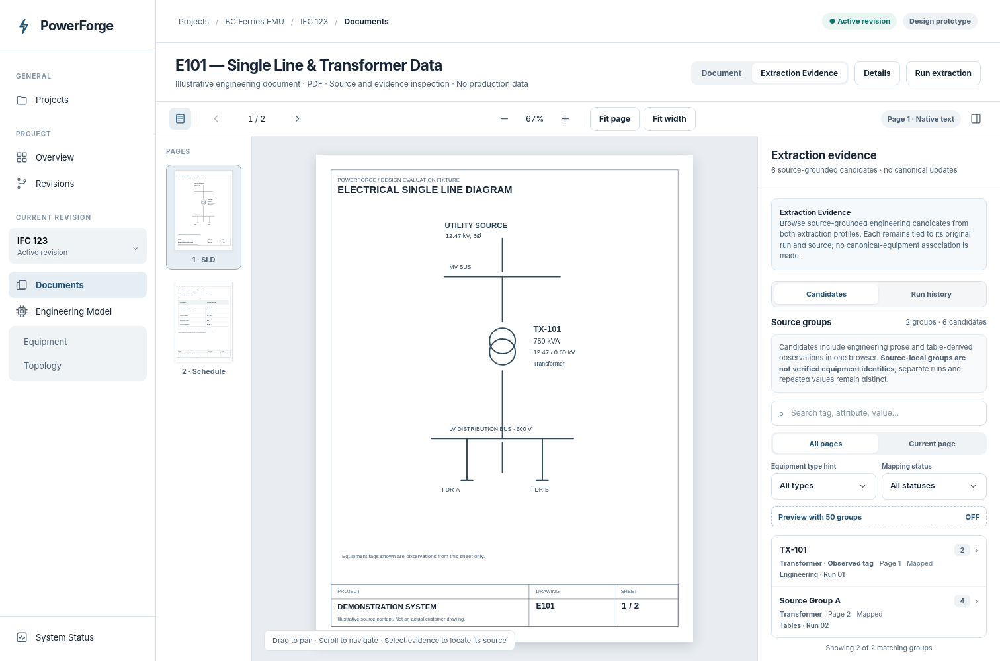
Scalable two-level source-group browser: searchable groups, focused candidates, precise region highlights and compact, expandable provenance.
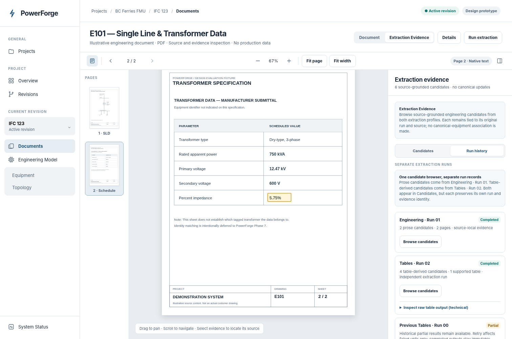
Candidates from both independent extraction runs share one browser. Run history remains separate, with optional raw table diagnostics.
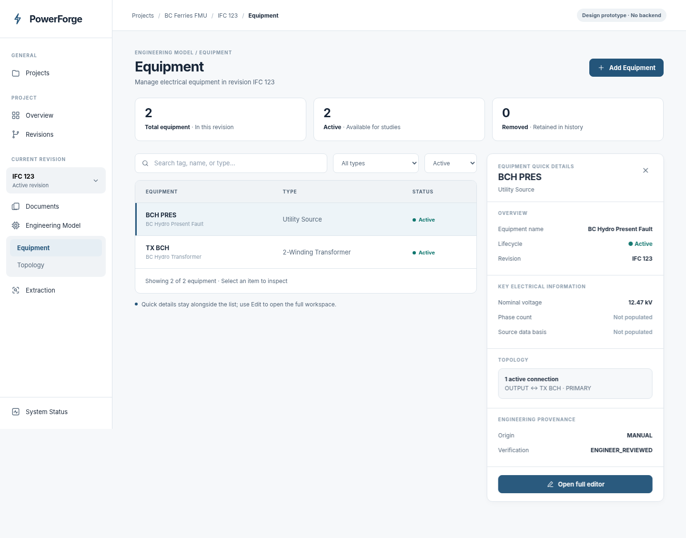
Nonmodal quick details, equipment selection, a full editor, compact attribute rows, and General / Attributes / Terminals navigation.
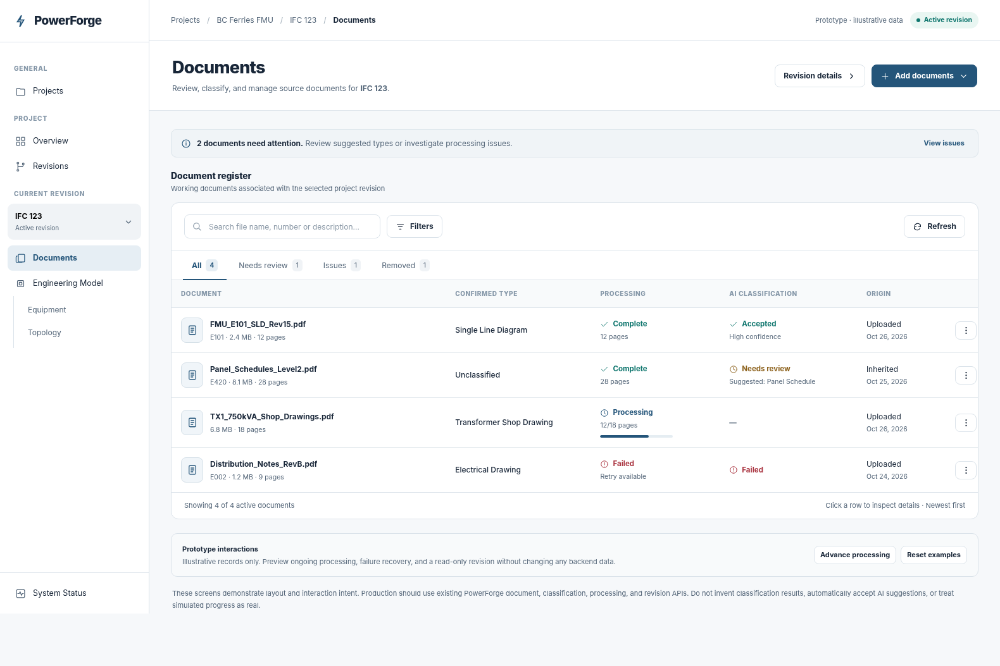
The missing main Documents destination: searchable document register, classification review, processing/issue quick views, upload and reuse flows, and nonmodal document details.
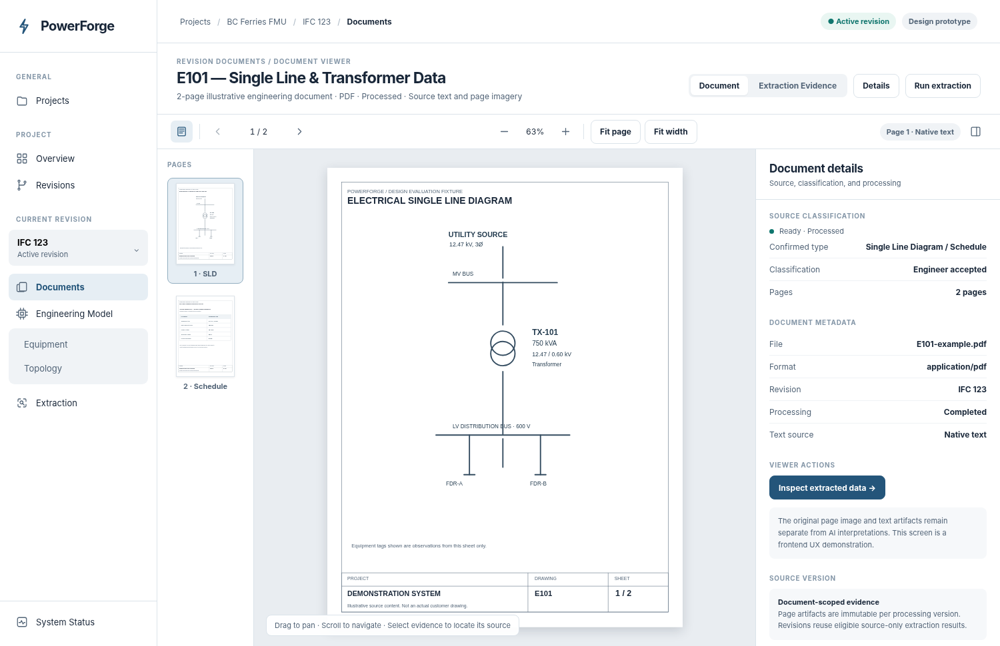
Page thumbnails, drag-to-pan, zoom, source inspection, extracted candidates, and direct evidence highlights. Tagless source values remain separate.
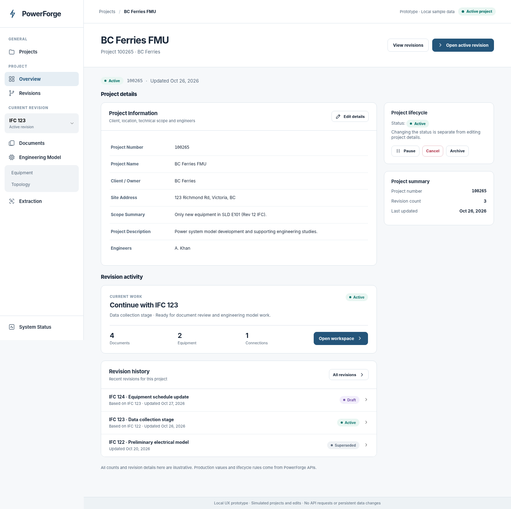
Searchable Revisions, Revision Overview, create/edit revision forms, manual engineering metadata, a revision switcher, and simulated activation. Project Overview links to the unified Projects reference.
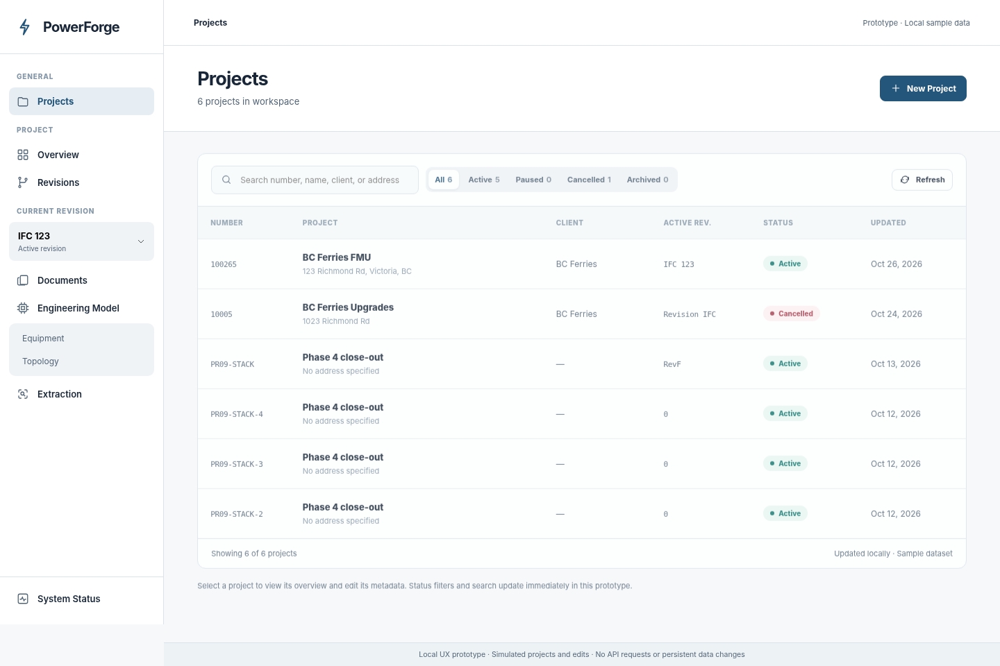
Project List, Create, and the single Project Overview: project details and lifecycle first, then Current Work and Revision History at their original column width, without a duplicate Active Revision card.
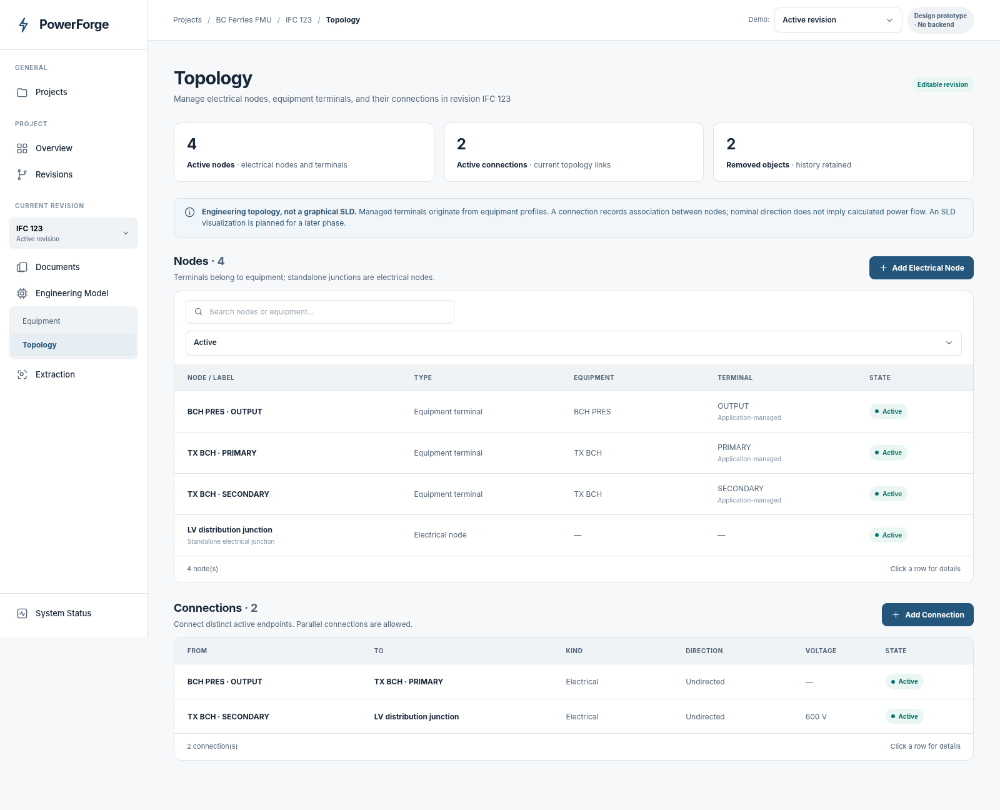
Node and connection registers, contextual inspector, editable node labels and connection fields, conservative lifecycle handling, and read-only revision demonstration.
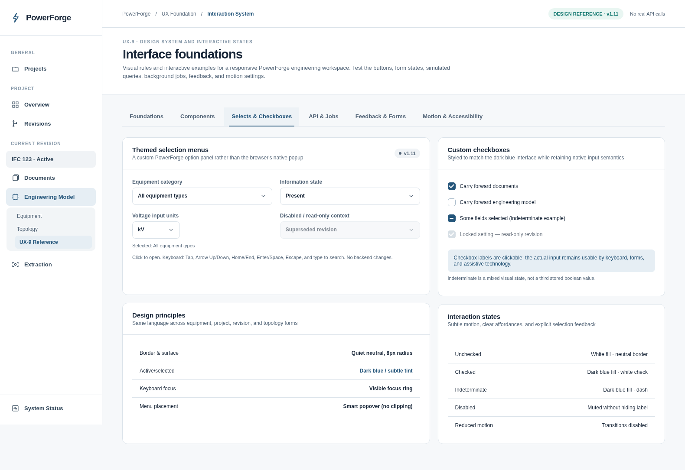
Custom dropdown menus and checkboxes, semantic colors and typography, reusable components, skeletons, background refetch, error/retry, progress, dirty drafts, toasts and reduced-motion examples.